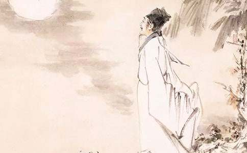
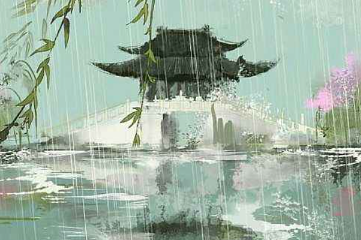

HANGZHOU
In his later years, Su Shi was first re-employed by the court and held
an important official position, but was later demoted to the south due
to political struggles. When he was in Hangzhou, he cared about the
people and built the famous Su Causeway.
Unfulfilled ambitions; youthful ideals; life reflections
《赠刘景文》
荷尽已无擎雨盖，
菊残犹有傲霜枝。
一年好景君须记，
最是橙黄橘绿时。
Presented to Liu Jingwen
The lotus has faded, no more leaves to hold the rain,
Chrysanthemums linger, proud in frost’s domain.
Remember, the best scenes of the year, I say,
Are when oranges turn yellow and tangerines green in day.

Su Shi created "Presented to Liu Jingwen", a poem he gave to his friend
when he was exiled to Huangzhou, describing the scenery of the four
seasons and his life interests. His creative mood is: appreciating
nature and the four seasons, being peaceful, and integrating into the
mountains and rivers. In terms of art, the text is concise and vivid,
rich in painting ideas, and the language is novel and agile. The theme
revolves around "philosophy, life realm, and tolerance", and the overall
emotional tendency is appreciation and peace.
《次湖上初晴后雨二首·其二》
水光潋滟晴方好，
山色空蒙雨亦奇。
欲把西湖比西子，
淡妆浓抹总相宜。
After a Rain at West Lake
(2nd Poem of Two)
The shimmering lake, a delight on sunny days,
The misty mountains, a wonder in the rain.
If I compare West Lake to the fair Lady Xi,
She’s charming richly adorned or plainly plain.

Su Shi created "After a Rain at West Lake (2nd Poem of Two)" was written
when Su Shi was working in Hangzhou. It expresses his feelings by
describing the scenery, and reconciles government affairs and leisure.
His creative mood is: living in the official residence, returning to the
peaceful and carefree nature in the poetic indifference. In terms of
art, it is based on freshness, natural language, and fresh and lively
poetry. The theme revolves around "mountains and rivers, beauty
comparison, and leisure", and the overall emotional tendency is calm and
leisure.